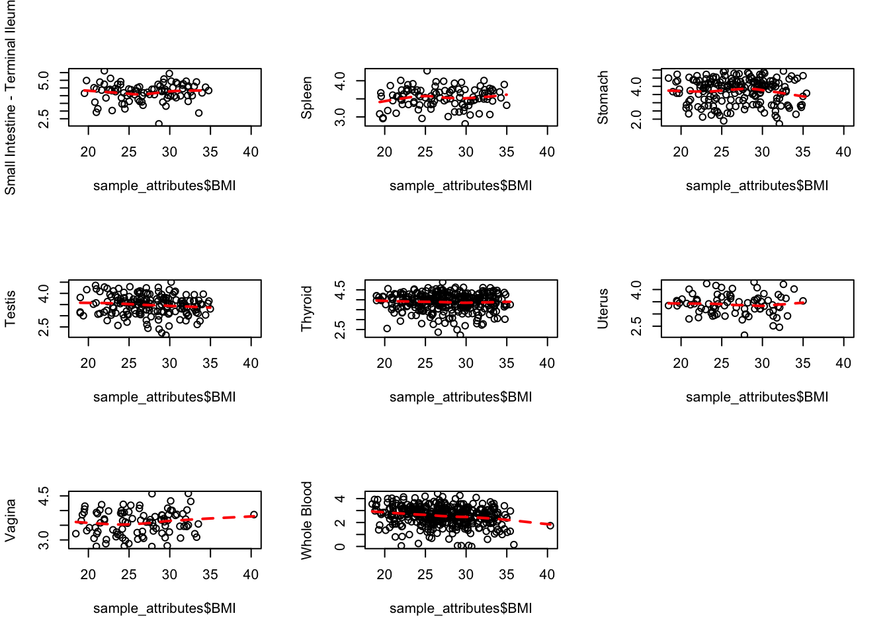
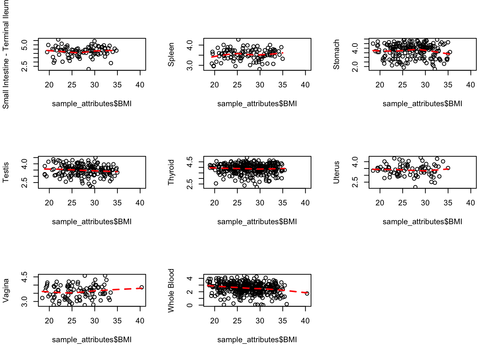
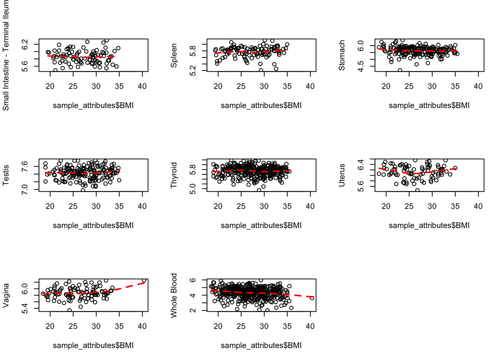
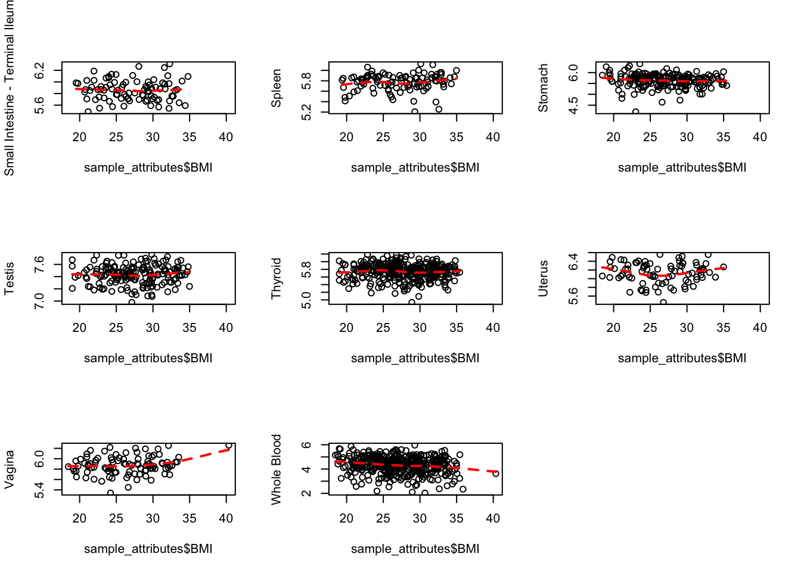

out <- mygene::queryMany(names, scopes="ensembl.gene", fields=c("name", "summary"), species="human");
## Finished
## Pass returnall=TRUE to return lists of duplicate or missing query terms.
cbind.data.frame(out$name, out$summary)
## out$name
## 1 HAUS augmin like complex subunit 4
## 2 topoisomerase (DNA) III beta
## 3 DNA replication helicase/nuclease 2
## 4 minichromosome maintenance 8 homologous recombination repair factor
## 5 period circadian clock 2
## 6 Bardet-Biedl syndrome 9
## 7 family with sequence similarity 118 member A
## 8 ectonucleoside triphosphate diphosphohydrolase 1
## 9 ARAP1 antisense RNA 2
## 10 <NA>
## 11 dynein heavy chain domain 1
## 12 major facilitator superfamily domain containing 11
## 13 zinc finger protein 77
## 14 spindle and centriole associated protein 1
## 15 transmembrane protein 106A
## 16 zinc finger protein 765
## 17 <NA>
## 18 DNA damage regulated autophagy modulator 2
## 19 <NA>
## 20 <NA>
## 21 butyrophilin subfamily 3 member A3
## 22 phosphoglucomutase 2
## 23 butyrophilin subfamily 3 member A2
## 24 RNA binding motif protein 48
## 25 <NA>
## 26 decapping mRNA 1B
## 27 calpain 2
## 28 COBW domain containing 1
## 29 CREB/ATF bZIP transcription factor
## 30 long intergenic non-protein coding RNA 852
## 31 TIA1 cytotoxic granule associated RNA binding protein like 1
## 32 intraflagellar transport 140
## 33 uncharacterized LOC400043
## 34 CCR4-NOT transcription complex subunit 2
## 35 small nucleolar RNA host gene 12
## 36 zinc finger protein 609
## 37 succinate dehydrogenase complex flavoprotein subunit A pseudogene 1
## 38 LUC7 like 3 pre-mRNA splicing factor
## 39 chromosome 1 open reading frame 112
## 40 pyridine nucleotide-disulphide oxidoreductase domain 2
## 41 HAUS augmin like complex subunit 5
## 42 tripartite motif containing 6
## 43 lipoma HMGIC fusion partner-like 2
## 44 UBL7 antisense RNA 1 (head to head)
## 45 complement C4B (Chido blood group)
## 46 additional sex combs like 1, transcriptional regulator
## 47 tetratricopeptide repeat domain 23
## 48 glycerol-3-phosphate acyltransferase 4
## 49 aldehyde dehydrogenase 3 family member A2
## 50 POM121 and ZP3 fusion
## out$summary
## 1 This gene encodes a subunit of the centrosome complex termed the human augmin complex. The encoded protein localizes to the spindle microtubules and may play a role in mitotic spindle assembly and maintenance of centrosome integrity during cell division. Alternate splicing results in multiple transcript variants. A pseudogene of this gene is found on chromosome 1.
## 2 This gene encodes a DNA topoisomerase, an enzyme that controls and alters the topologic states of DNA during transcription. This enzyme catalyzes the transient breaking and rejoining of a single strand of DNA which allows the strands to pass through one another, thus relaxing the supercoils and altering the topology of DNA. The enzyme interacts with DNA helicase SGS1 and plays a role in DNA recombination, cellular aging and maintenance of genome stability. Low expression of this gene may be related to higher survival rates in breast cancer patients. This gene has a pseudogene on chromosome 22. Alternate splicing results in multiple transcript variants. Additional alternatively spliced transcript variants of this gene have been described, but their full-length nature is not known.
## 3 This gene encodes a member of the DNA2/NAM7 helicase family. The encoded protein is a conserved helicase/nuclease involved in the maintenance of mitochondrial and nuclear DNA stability. Mutations in this gene are associated with autosomal dominant progressive external ophthalmoplegia-6 (PEOA6) and Seckel syndrome 8. Alternatively spliced transcript variants have been found for this gene.
## 4 The protein encoded by this gene is one of the highly conserved mini-chromosome maintenance proteins (MCM) that are essential for the initiation of eukaryotic genome replication. The hexameric protein complex formed by the mini-chromosome maintenance proteins is a key component of the pre-replication complex and may be involved in the formation of replication forks and in the recruitment of other DNA replication related proteins. This protein contains the central domain that is conserved among the mini-chromosome maintenance proteins. The encoded protein may interact with other mini-chromosome maintenance proteins and play a role in DNA replication. This gene may be associated with length of reproductive lifespan and menopause. Alternatively spliced transcript variants encoding distinct isoforms have been described.
## 5 This gene is a member of the Period family of genes and is expressed in a circadian pattern in the suprachiasmatic nucleus, the primary circadian pacemaker in the mammalian brain. Genes in this family encode components of the circadian rhythms of locomotor activity, metabolism, and behavior. This gene is upregulated by CLOCK/ARNTL heterodimers but then represses this upregulation in a feedback loop using PER/CRY heterodimers to interact with CLOCK/ARNTL. Polymorphisms in this gene may increase the risk of getting certain cancers and have been linked to sleep disorders.
## 6 This gene is downregulated by parathyroid hormone in osteoblastic cells, and therefore is thought to be involved in parathyroid hormone action in bones. The exact function of this gene has not yet been determined. Alternatively spliced transcript variants encoding different isoforms have been identified.
## 7 <NA>
## 8 The protein encoded by this gene is a plasma membrane protein that hydrolyzes extracellular ATP and ADP to AMP. Inhibition of this protein's activity may confer anticancer benefits. Several transcript variants encoding different isoforms have been found for this gene.
## 9 <NA>
## 10 <NA>
## 11 <NA>
## 12 <NA>
## 13 <NA>
## 14 <NA>
## 15 <NA>
## 16 <NA>
## 17 <NA>
## 18 The protein encoded by this gene binds microtubule-associated protein 1 light chain 3 and is required for autophagy. Defects in this gene are a cause of retinal dystrophy. In addition, two microRNAs (microRNA 125b-1 and microRNA 144) can bind to the mRNA of this gene and produce the disease state.
## 19 <NA>
## 20 <NA>
## 21 The butyrophilin (BTN) genes are a group of major histocompatibility complex (MHC)-associated genes that encode type I membrane proteins with 2 extracellular immunoglobulin (Ig) domains and an intracellular B30.2 (PRYSPRY) domain. Three subfamilies of human BTN genes are located in the MHC class I region: the single-copy BTN1A1 gene (MIM 601610) and the BTN2 (e.g., BTN2A1; MIM 613590) and BTN3 (e.g., BNT3A3) genes, which have undergone tandem duplication, resulting in 3 copies of each (summary by Smith et al., 2010 [PubMed 20208008]).
## 22 <NA>
## 23 This gene encodes a member of the immunoglobulin superfamily, which resides in the juxta-telomeric region of the major histocompatability class 1 locus and is clustered with the other family members on chromosome 6. The encoded protein may be involved in the adaptive immune response. Alternatively spliced transcript variants encoding different isoforms have been found for this gene.
## 24 <NA>
## 25 <NA>
## 26 This gene encodes a member of a family of proteins that function in removing the 5' cap from mRNAs, which is a step in regulated mRNA decay. This protein localizes to cytoplasmic foci which are the site of mRNA breakdown and turnover. Alternative splicing results in multiple transcript variants.
## 27 The calpains, calcium-activated neutral proteases, are nonlysosomal, intracellular cysteine proteases. The mammalian calpains include ubiquitous, stomach-specific, and muscle-specific proteins. The ubiquitous enzymes consist of heterodimers with distinct large, catalytic subunits associated with a common small, regulatory subunit. This gene encodes the large subunit of the ubiquitous enzyme, calpain 2. Multiple heterogeneous transcriptional start sites in the 5' UTR have been reported. Two transcript variants encoding different isoforms have been found for this gene.
## 28 <NA>
## 29 <NA>
## 30 <NA>
## 31 The protein encoded by this gene is a member of a family of RNA-binding proteins, has three RNA recognition motifs (RRMs), and binds adenine and uridine-rich elements in mRNA and pre-mRNAs of a wide range of genes. It regulates various activities including translational control, splicing and apoptosis. Alternate transcriptional splice variants, encoding different isoforms, have been characterized. The different isoforms have been show to function differently with respect to post-transcriptional silencing.
## 32 This gene encodes one of the subunits of the intraflagellar transport (IFT) complex A. Intraflagellar transport is involved in the genesis, resorption and signaling of primary cilia. The primary cilium is a microtubule-based sensory organelle at the surface of most quiescent mammalian cells, that receives signals from its environment, such as the flow of fluid, light or odors, and transduces those signals to the nucleus. Loss of the corresponding protein in mouse results in renal cystic disease.
## 33 <NA>
## 34 This gene encodes a subunit of the multi-component CCR4-NOT complex. The CCR4-NOT complex regulates mRNA synthesis and degradation and is also thought to be involved in mRNA splicing, transport and localization. The encoded protein interacts with histone deacetylases and functions as a repressor of polymerase II transcription. Alternatively spliced transcript variants have been observed for this gene.
## 35 <NA>
## 36 <NA>
## 37 <NA>
## 38 This gene encodes a protein with an N-terminal half that contains cysteine/histidine motifs and leucine zipper-like repeats, and the C-terminal half is rich in arginine and glutamate residues (RE domain) and arginine and serine residues (RS domain). This protein localizes with a speckled pattern in the nucleus, and could be involved in the formation of splicesome via the RE and RS domains. Two alternatively spliced transcript variants encoding the same protein have been found for this gene.
## 39 <NA>
## 40 <NA>
## 41 HAUS5 is 1 of 8 subunits of the 390-kD human augmin complex, or HAUS complex. The augmin complex was first identified in Drosophila, and its name comes from the Latin verb 'augmentare,' meaning 'to increase.' The augmin complex is a microtubule-binding complex involved in microtubule generation within the mitotic spindle and is vital to mitotic spindle assembly (Goshima et al., 2008 [PubMed 18443220]; Uehara et al., 2009 [PubMed 19369198]).
## 42 The protein encoded by this gene is a member of the tripartite motif (TRIM) family. The TRIM motif includes three zinc-binding domains, a RING, B-box type 1 and B-box type 2 domain, and a coiled-coil region. The protein localizes to the nucleus, but its specific function has not been identified. This gene is mapped to chromosome 11p15, where it resides within a TRIM gene cluster. Alternative splicing results in multiple transcript variants. A read-through transcript from this gene into the downstream TRIM34 gene has also been observed, which results in a fusion product from these neighboring family members.
## 43 This gene is a member of the lipoma HMGIC fusion partner (LHFP) gene family, which is a subset of the superfamily of tetraspan transmembrane protein encoding genes. Mutations in one LHFP-like gene result in deafness in humans and mice, and a second LHFP-like gene is fused to a high-mobility group gene in a translocation-associated lipoma. Alternatively spliced transcript variants have been found, but their biological validity has not been determined.
## 44 <NA>
## 45 This gene encodes the basic form of complement factor 4, part of the classical activation pathway. The protein is expressed as a single chain precursor which is proteolytically cleaved into a trimer of alpha, beta, and gamma chains prior to secretion. The trimer provides a surface for interaction between the antigen-antibody complex and other complement components. The alpha chain may be cleaved to release C4 anaphylatoxin, a mediator of local inflammation. Deficiency of this protein is associated with systemic lupus erythematosus. This gene localizes to the major histocompatibility complex (MHC) class III region on chromosome 6. Varying haplotypes of this gene cluster exist, such that individuals may have 1, 2, or 3 copies of this gene. In addition, this gene exists as a long form and a short form due to the presence or absence of a 6.4 kb endogenous HERV-K retrovirus in intron 9.
## 46 This gene is similar to the Drosophila additional sex combs gene, which encodes a chromatin-binding protein required for normal determination of segment identity in the developing embryo. The protein is a member of the Polycomb group of proteins, which are necessary for the maintenance of stable repression of homeotic and other loci. The protein is thought to disrupt chromatin in localized areas, enhancing transcription of certain genes while repressing the transcription of other genes. The protein encoded by this gene functions as a ligand-dependent co-activator for retinoic acid receptor in cooperation with nuclear receptor coactivator 1. Mutations in this gene are associated with myelodysplastic syndromes and chronic myelomonocytic leukemia. Alternative splicing results in multiple transcript variants.
## 47 <NA>
## 48 Lysophosphatidic acid acyltransferases (EC 2.3.1.51) catalyze the conversion of lysophosphatidic acid (LPA) to phosphatidic acid (PA). LPA and PA are involved in signal transduction and lipid biosynthesis.
## 49 Aldehyde dehydrogenase isozymes are thought to play a major role in the detoxification of aldehydes generated by alcohol metabolism and lipid peroxidation. This gene product catalyzes the oxidation of long-chain aliphatic aldehydes to fatty acid. Mutations in the gene cause Sjogren-Larsson syndrome. Alternatively spliced transcript variants encoding different isoforms have been found for this gene.
## 50 This gene appears to have resulted from a fusion of DNA sequences derived from 2 distinct loci, specifically through the duplication of two internal exons from the POM121 gene and four 3' exons from the ZP3 gene. The 5' end of this gene is similar to the 5` coding region of the POM121 gene which encodes an integral nuclear pore membrane protein. However, the protein encoded by this gene lacks the nuclear pore localization motif. The 3' end of this gene is similar to the last 4 exons of the zona pellucida glycoprotein 3 (ZP3) gene and the encoded protein retains one zona pellucida domain. Multiple protein isoforms are encoded by transcript variants of this gene.
out <- mygene::queryMany(names, scopes="ensembl.gene", fields=c("name", "summary"), species="human");
## Finished
cbind.data.frame(out$name, out$summary)
## out$name
## 1 nipsnap homolog 1
## 2 LSM family member 14B
## 3 NDRG family member 3
## 4 <NA>
## 5 BTB domain containing 9
## 6 TBC/LysM-associated domain containing 1
## 7 <NA>
## 8 <NA>
## 9 long intergenic non-protein coding RNA 641
## 10 cleavage and polyadenylation specific factor 7
## 11 zinc finger protein 44
## 12 coronin 6
## 13 zinc finger protein 585B
## 14 popeye domain containing 2
## 15 post-GPI attachment to proteins 2
## 16 solute carrier family 25 member 12
## 17 PHD finger protein 2
## 18 zinc finger protein 446
## 19 Ral GEF with PH domain and SH3 binding motif 1
## 20 tetraspanin 18
## 21 mitochondrial elongation factor 2
## 22 RTF1 homolog, Paf1/RNA polymerase II complex component
## 23 suppression of tumorigenicity 7 like
## 24 zinc finger protein 101
## 25 mitogen-activated protein kinase kinase 4
## 26 progestin and adipoQ receptor family member 8
## 27 PC4 and SFRS1 interacting protein 1
## 28 YY1 transcription factor
## 29 <NA>
## 30 <NA>
## 31 PMS2 C-terminal like pseudogene
## 32 long intergenic non-protein coding RNA 910
## 33 zinc finger protein 407
## 34 ZFP41 zinc finger protein
## 35 family with sequence similarity 219 member A
## 36 ubiquitin associated and SH3 domain containing B
## 37 basal body orientation factor 1
## 38 endonuclease/exonuclease/phosphatase family domain containing 1
## 39 nuclear respiratory factor 1
## 40 solute carrier family 39 member 13
## 41 NBR1, autophagy cargo receptor
## 42 Rho guanine nucleotide exchange factor 4
## 43 <NA>
## 44 zinc finger protein 720
## 45 TM2 domain containing 3
## 46 family with sequence similarity 192 member A
## 47 TAO kinase 3
## 48 BRD4 interacting chromatin remodeling complex associated protein like
## 49 <NA>
## 50 sorting nexin family member 27
## out$summary
## 1 This gene encodes a member of the NipSnap family of proteins that may be involved in vesicular transport. A similar protein in mice inhibits the calcium channel TRPV6, and is also localized to the inner mitochondrial membrane where it may play a role in mitochondrial DNA maintenance. A pseudogene of this gene is located on the short arm of chromosome 17. Alternatively spliced transcript variants encoding multiple isoforms have been observed for this gene.
## 2 <NA>
## 3 <NA>
## 4 <NA>
## 5 This locus encodes a BTB/POZ domain-containing protein. This domain is known to be involved in protein-protein interactions. Polymorphisms at this locus have been reported to be associated with susceptibility to Restless Legs Syndrome and may also be associated with Tourette Syndrome. Alternatively spliced transcript variants have been described.
## 6 <NA>
## 7 <NA>
## 8 <NA>
## 9 <NA>
## 10 Cleavage factor Im (CFIm) is one of six factors necessary for correct cleavage and polyadenylation of pre-mRNAs. CFIm is composed of three different subunits of 25, 59, and 68 kDa, and it functions as a heterotetramer, with a dimer of the 25 kDa subunit binding to two of the 59 or 68 kDa subunits. The protein encoded by this gene represents the 59 kDa subunit, which can interact with the splicing factor U2 snRNP Auxiliary Factor (U2AF) 65 to link the splicing and polyadenylation complexes.
## 11 <NA>
## 12 <NA>
## 13 <NA>
## 14 This gene encodes a member of the POP family of proteins which contain three putative transmembrane domains. This membrane associated protein is predominantly expressed in skeletal and cardiac muscle, and may have an important function in these tissues.
## 15 The protein encoded by this gene plays a role in the maturation of glycosylphosphatidylinositol (GPI) anchors on GPI-anchored proteins. Defects in this gene have been associated with hyperphosphatasia with mental retardation syndrome 3.
## 16 This gene encodes a calcium-binding mitochondrial carrier protein. The encoded protein localizes to the mitochondria and is involved in the exchange of aspartate for glutamate across the inner mitochondrial membrane. Polymorphisms in this gene may be associated with autism, and mutations in this gene may also be a cause of global cerebral hypomyelination. Alternatively spliced transcript variants have been observed for this gene.
## 17 This gene encodes a protein which contains a zinc finger-like PHD (plant homeodomain) finger, distinct from other classes of zinc finger motifs, and a hydrophobic and highly conserved domain. The PHD finger shows the typical Cys4-His-Cys3 arrangement. PHD finger genes are thought to belong to a diverse group of transcriptional regulators possibly affecting eukaryotic gene expression by influencing chromatin structure.
## 18 <NA>
## 19 <NA>
## 20 <NA>
## 21 This gene encodes an outer mitochondrial membrane protein that functions in the regulation of mitochondrial morphology. It can directly recruit the fission mediator dynamin-related protein 1 (Drp1) to the mitochondrial surface. The gene is located within the Smith-Magenis syndrome region on chromosome 17. Alternative splicing results in multiple transcript variants encoding different isoforms.
## 22 This locus may represent a gene involved in regulation of transcription elongation and chromatin remodeling, based on studies of similar proteins in other organisms. The encoded protein may bind single-stranded DNA.
## 23 This gene was identified by its similarity to the ST7 tumor suppressor gene found in the chromosome 7q31 region. This gene is clustered in a tail-to-tail manner with the WNT2B gene in a chromosomal region known to be deleted and rearranged in a variety of cancers. Several transcript variants encoding many different isoforms have been described, but some have not been fully characterized.
## 24 Zinc finger proteins (ZNFs), such as ZNF101, bind nucleic acids and perform many key functions, the most important of which is regulating transcription (summary by Bellefroid et al., 1993 [PubMed 8467795]). See ZNF91 (MIM 603971) for general information on ZNFs.
## 25 This gene encodes a member of the mitogen-activated protein kinase (MAPK) family. Members of this family act as an integration point for multiple biochemical signals and are involved in a wide variety of cellular processes such as proliferation, differentiation, transcription regulation, and development. They form a three-tiered signaling module composed of MAPKKKs, MAPKKs, and MAPKs. This protein is phosphorylated at serine and threonine residues by MAPKKKs and subsequently phosphorylates downstream MAPK targets at threonine and tyrosine residues. A similar protein in mouse has been reported to play a role in liver organogenesis. A pseudogene of this gene is located on the long arm of chromosome X. Alternative splicing results in multiple transcript variants.
## 26 <NA>
## 27 <NA>
## 28 YY1 is a ubiquitously distributed transcription factor belonging to the GLI-Kruppel class of zinc finger proteins. The protein is involved in repressing and activating a diverse number of promoters. YY1 may direct histone deacetylases and histone acetyltransferases to a promoter in order to activate or repress the promoter, thus implicating histone modification in the function of YY1.
## 29 <NA>
## 30 <NA>
## 31 <NA>
## 32 <NA>
## 33 This gene encodes a zinc finger protein whose exact function is not known. It may be involved in transcriptional regulation. Several alternatively spliced transcript variants encoding different isoforms have been found for this gene.
## 34 <NA>
## 35 The protein encoded by this gene has homologs that have been identified in mouse, macaque, etc organisms. Multiple alternatively spliced transcript variants that encode different protein isoforms have been described for this gene.
## 36 This gene encodes a protein that contains a ubiquitin associated domain at the N-terminus, an SH3 domain, and a C-terminal domain with similarities to the catalytic motif of phosphoglycerate mutase. The encoded protein was found to inhibit endocytosis of epidermal growth factor receptor (EGFR) and platelet-derived growth factor receptor.
## 37 <NA>
## 38 <NA>
## 39 This gene encodes a protein that homodimerizes and functions as a transcription factor which activates the expression of some key metabolic genes regulating cellular growth and nuclear genes required for respiration, heme biosynthesis, and mitochondrial DNA transcription and replication. The protein has also been associated with the regulation of neurite outgrowth. Alternative splicing results in multiple transcript variants. Confusion has occurred in bibliographic databases due to the shared symbol of NRF1 for this gene and for 'nuclear factor (erythroid-derived 2)-like 1' which has an official symbol of NFE2L1.
## 40 This gene encodes a member of the LIV-1 subfamily of the ZIP transporter family. The encoded transmembrane protein functions as a zinc transporter. Mutations in this gene have been associated with the spondylocheiro dysplastic form of Ehlers-Danlos syndrome. Alternate transcript variants have been found for this gene.
## 41 The protein encoded by this gene was originally identified as an ovarian tumor antigen monitored in ovarian cancer. The encoded protein contains a B-box/coiled-coil motif, which is present in many genes with transformation potential. It functions as a specific autophagy receptor for the selective autophagic degradation of peroxisomes by forming intracellular inclusions with ubiquitylated autophagic substrates. This gene is located on a region of chromosome 17q21.1 that is in close proximity to the BRCA1 tumor suppressor gene. Alternative splicing of this gene results in multiple transcript variants.
## 42 Rho GTPases play a fundamental role in numerous cellular processes that are initiated by extracellular stimuli that work through G protein coupled receptors. The protein encoded by this gene may form complex with G proteins and stimulate Rho-dependent signals. Multiple alternatively spliced transcript variants encoding different isoforms have been found, but the full-length nature of some variants has not been determined.
## 43 <NA>
## 44 <NA>
## 45 The protein encoded by this gene contains a structural module related to that of the seven transmembrane domain G protein-coupled receptor superfamily. This protein has sequence and structural similarities to the beta-amyloid binding protein (BBP), but, unlike BBP, it does not regulate a response to beta-amyloid peptide. This protein may have regulatory roles in cell death or proliferation signal cascades. Several alternatively spliced transcript variants of this gene are described but the full length nature of some variants has not been determined. Multiple polyadenylation sites have been found in this gene.
## 46 <NA>
## 47 The protein encoded by this gene is a serine/threonine protein kinase that activates the p38/MAPK14 stress-activated MAPK cascade but inhibits the basal activity of the MAPK8/JNK cascade. The encoded protein is a member of the GCK subfamily of STE20-like kinases.
## 48 <NA>
## 49 <NA>
## 50 This gene encodes a member of the sorting nexin family, a diverse group of cytoplasmic and membrane-associated proteins involved in endocytosis of plasma membrane receptors and protein trafficking through these compartments. All members of this protein family contain a phosphoinositide binding domain (PX domain). A highly similar protein in mouse is responsible for the specific recruitment of an isoform of serotonin 5-hydroxytryptamine 4 receptor into early endosomes, suggesting the analogous role for the human protein.
out <- mygene::queryMany(names, scopes="ensembl.gene", fields=c("name", "summary"), species="human");
## Finished
## Pass returnall=TRUE to return lists of duplicate or missing query terms.
cbind.data.frame(out$name, out$summary)
## out$name
## 1 ubiquitin C-terminal hydrolase L1
## 2 uncharacterized LOC728730
## 3 suppression of tumorigenicity 14
## 4 ferritin light chain
## 5 CLN8, transmembrane ER and ERGIC protein
## 6 adenosine monophosphate deaminase 3
## 7 ferritin light chain pseudogene 3
## 8 NDRG family member 4
## 9 ATP binding cassette subfamily C member 3
## 10 <NA>
## 11 transmembrane protein 52
## 12 Wnt family member 3
## 13 thymocyte nuclear protein 1
## 14 NAD(P)H quinone dehydrogenase 1
## 15 tumor associated calcium signal transducer 2
## 16 tubulin folding cofactor A
## 17 basigin (Ok blood group)
## 18 triggering receptor expressed on myeloid cells 2
## 19 SH2B adaptor protein 3
## 20 solute carrier family 16 member 6
## 21 phosphomannomutase 1
## 22 repulsive guidance molecule family member b
## 23 neutral cholesterol ester hydrolase 1
## 24 <NA>
## 25 potassium voltage-gated channel subfamily A regulatory beta subunit 2
## 26 GINS complex subunit 3
## 27 arrestin beta 2
## 28 formin homology 2 domain containing 3
## 29 oxidized low density lipoprotein receptor 1
## 30 synuclein gamma
## 31 cytohesin 1
## 32 carbonic anhydrase 3
## 33 TNF receptor superfamily member 10a
## 34 enoyl-CoA delta isomerase 1
## 35 mitochondrial pyruvate carrier 1
## 36 <NA>
## 37 serine dehydratase
## 38 IQ motif containing GTPase activating protein 2
## 39 ceramide kinase like
## 40 EF-hand domain family member D2
## 41 required for meiotic nuclear division 5 homolog B
## 42 protein tyrosine phosphatase, receptor type E
## 43 dual adaptor of phosphotyrosine and 3-phosphoinositides 1
## 44 <NA>
## 45 G protein signaling modulator 3
## 46 coagulation factor II thrombin receptor
## 47 solute carrier family 2 member 4
## 48 protein tyrosine phosphatase, non-receptor type 6
## 49 coactosin like F-actin binding protein 1
## 50 molybdenum cofactor synthesis 1
## out$summary
## 1 The protein encoded by this gene belongs to the peptidase C12 family. This enzyme is a thiol protease that hydrolyzes a peptide bond at the C-terminal glycine of ubiquitin. This gene is specifically expressed in the neurons and in cells of the diffuse neuroendocrine system. Mutations in this gene may be associated with Parkinson disease.
## 2 <NA>
## 3 The protein encoded by this gene is an epithelial-derived, integral membrane serine protease. This protease forms a complex with the Kunitz-type serine protease inhibitor, HAI-1, and is found to be activated by sphingosine 1-phosphate. This protease has been shown to cleave and activate hepatocyte growth factor/scattering factor, and urokinase plasminogen activator, which suggest the function of this protease as an epithelial membrane activator for other proteases and latent growth factors. The expression of this protease has been associated with breast, colon, prostate, and ovarian tumors, which implicates its role in cancer invasion, and metastasis.
## 4 This gene encodes the light subunit of the ferritin protein. Ferritin is the major intracellular iron storage protein in prokaryotes and eukaryotes. It is composed of 24 subunits of the heavy and light ferritin chains. Variation in ferritin subunit composition may affect the rates of iron uptake and release in different tissues. A major function of ferritin is the storage of iron in a soluble and nontoxic state. Defects in this light chain ferritin gene are associated with several neurodegenerative diseases and hyperferritinemia-cataract syndrome. This gene has multiple pseudogenes.
## 5 This gene encodes a transmembrane protein belonging to a family of proteins containing TLC domains, which are postulated to function in lipid synthesis, transport, or sensing. The protein localizes to the endoplasmic reticulum (ER), and may recycle between the ER and ER-Golgi intermediate compartment. Mutations in this gene are associated with progressive epilepsy with mental retardation (EMPR), which is a subtype of neuronal ceroid lipofuscinoses (NCL). Patients with mutations in this gene have altered levels of sphingolipid and phospholipids in the brain.
## 6 This gene encodes a member of the AMP deaminase gene family. The encoded protein is a highly regulated enzyme that catalyzes the hydrolytic deamination of adenosine monophosphate to inosine monophosphate, a branch point in the adenylate catabolic pathway. This gene encodes the erythrocyte (E) isoforms, whereas other family members encode isoforms that predominate in muscle (M) and liver (L) cells. Mutations in this gene lead to the clinically asymptomatic, autosomal recessive condition erythrocyte AMP deaminase deficiency. Alternatively spliced transcript variants encoding different isoforms of this gene have been described.
## 7 <NA>
## 8 This gene is a member of the N-myc downregulated gene family which belongs to the alpha/beta hydrolase superfamily. The protein encoded by this gene is a cytoplasmic protein that is required for cell cycle progression and survival in primary astrocytes and may be involved in the regulation of mitogenic signalling in vascular smooth muscles cells. Alternative splicing results in multiple transcripts encoding different isoforms.
## 9 The protein encoded by this gene is a member of the superfamily of ATP-binding cassette (ABC) transporters. ABC proteins transport various molecules across extra- and intra-cellular membranes. ABC genes are divided into seven distinct subfamilies (ABC1, MDR/TAP, MRP, ALD, OABP, GCN20, White). This protein is a member of the MRP subfamily which is involved in multi-drug resistance. The specific function of this protein has not yet been determined; however, this protein may play a role in the transport of biliary and intestinal excretion of organic anions. Alternatively spliced variants which encode different protein isoforms have been described; however, not all variants have been fully characterized.
## 10 <NA>
## 11 <NA>
## 12 The WNT gene family consists of structurally related genes which encode secreted signaling proteins. These proteins have been implicated in oncogenesis and in several developmental processes, including regulation of cell fate and patterning during embryogenesis. This gene is a member of the WNT gene family. It encodes a protein which shows 98% amino acid identity to mouse Wnt3 protein, and 84% to human WNT3A protein, another WNT gene product. The mouse studies show the requirement of Wnt3 in primary axis formation in the mouse. Studies of the gene expression suggest that this gene may play a key role in some cases of human breast, rectal, lung, and gastric cancer through activation of the WNT-beta-catenin-TCF signaling pathway. This gene is clustered with WNT15, another family member, in the chromosome 17q21 region.
## 13 This gene encodes a protein that is highly conserved among vertebrates and plant species and may be involved in the induction of apoptosis. Alternatively spliced transcript variants encoding different isoforms have been described.
## 14 This gene is a member of the NAD(P)H dehydrogenase (quinone) family and encodes a cytoplasmic 2-electron reductase. This FAD-binding protein forms homodimers and reduces quinones to hydroquinones. This protein's enzymatic activity prevents the one electron reduction of quinones that results in the production of radical species. Mutations in this gene have been associated with tardive dyskinesia (TD), an increased risk of hematotoxicity after exposure to benzene, and susceptibility to various forms of cancer. Altered expression of this protein has been seen in many tumors and is also associated with Alzheimer's disease (AD). Alternate transcriptional splice variants, encoding different isoforms, have been characterized.
## 15 This intronless gene encodes a carcinoma-associated antigen. This antigen is a cell surface receptor that transduces calcium signals. Mutations of this gene have been associated with gelatinous drop-like corneal dystrophy.
## 16 The product of this gene is one of four proteins (cofactors A, D, E, and C) involved in the pathway leading to correctly folded beta-tubulin from folding intermediates. Cofactors A and D are believed to play a role in capturing and stabilizing beta-tubulin intermediates in a quasi-native confirmation. Cofactor E binds to the cofactor D/beta-tubulin complex; interaction with cofactor C then causes the release of beta-tubulin polypeptides that are committed to the native state. This gene encodes chaperonin cofactor A. Multiple alternatively spliced transcript variants encoding different isoforms have been found for this gene.
## 17 The protein encoded by this gene is a plasma membrane protein that is important in spermatogenesis, embryo implantation, neural network formation, and tumor progression. The encoded protein is also a member of the immunoglobulin superfamily. Multiple transcript variants encoding different isoforms have been found for this gene.
## 18 This gene encodes a membrane protein that forms a receptor signaling complex with the TYRO protein tyrosine kinase binding protein. The encoded protein functions in immune response and may be involved in chronic inflammation by triggering the production of constitutive inflammatory cytokines. Defects in this gene are a cause of polycystic lipomembranous osteodysplasia with sclerosing leukoencephalopathy (PLOSL). Alternative splicing results in multiple transcript variants encoding different isoforms.
## 19 This gene encodes a member of the SH2B adaptor family of proteins, which are involved in a range of signaling activities by growth factor and cytokine receptors. The encoded protein is a key negative regulator of cytokine signaling and plays a critical role in hematopoiesis. Mutations in this gene have been associated with susceptibility to celiac disease type 13 and susceptibility to insulin-dependent diabetes mellitus. Alternatively spliced transcript variants encoding different isoforms have been found for this gene.
## 20 <NA>
## 21 Phosphomannomutase catalyzes the conversion between D-mannose 6-phosphate and D-mannose 1-phosphate which is a substrate for GDP-mannose synthesis. GDP-mannose is used for synthesis of dolichol-phosphate-mannose, which is essential for N-linked glycosylation and thus the secretion of several glycoproteins as well as for the synthesis of glycosyl-phosphatidyl-inositol (GPI) anchored proteins.
## 22 RGMB is a glycosylphosphatidylinositol (GPI)-anchored member of the repulsive guidance molecule family (see RGMA, MIM 607362) and contributes to the patterning of the developing nervous system (Samad et al., 2005 [PubMed 15671031]).
## 23 <NA>
## 24 <NA>
## 25 Voltage-gated potassium (Kv) channels represent the most complex class of voltage-gated ion channels from both functional and structural standpoints. Their diverse functions include regulating neurotransmitter release, heart rate, insulin secretion, neuronal excitability, epithelial electrolyte transport, smooth muscle contraction, and cell volume. Four sequence-related potassium channel genes - shaker, shaw, shab, and shal - have been identified in Drosophila, and each has been shown to have human homolog(s). This gene encodes a member of the potassium channel, voltage-gated, shaker-related subfamily. This member is one of the beta subunits, which are auxiliary proteins associating with functional Kv-alpha subunits. This member alters functional properties of the KCNA4 gene product. Alternative splicing of this gene results in multiple transcript variants encoding distinct isoforms.
## 26 This gene encodes a protein subunit of the GINS heterotetrameric complex, which is essential for the initiation of DNA replication and replisome progression in eukaryotes. Alternatively spliced transcript variants encoding distinct isoforms have been described.
## 27 Members of arrestin/beta-arrestin protein family are thought to participate in agonist-mediated desensitization of G-protein-coupled receptors and cause specific dampening of cellular responses to stimuli such as hormones, neurotransmitters, or sensory signals. Arrestin beta 2, like arrestin beta 1, was shown to inhibit beta-adrenergic receptor function in vitro. It is expressed at high levels in the central nervous system and may play a role in the regulation of synaptic receptors. Besides the brain, a cDNA for arrestin beta 2 was isolated from thyroid gland, and thus it may also be involved in hormone-specific desensitization of TSH receptors. Multiple alternatively spliced transcript variants encoding different isoforms have been found for this gene.
## 28 The protein encoded by this gene is a member of the diaphanous-related formins (DRF), and contains multiple domains, including GBD (GTPase-binding domain), DID (diaphanous inhibitory domain), FH1 (formin homology 1), FH2 (formin homology 2), and DAD (diaphanous auto-regulatory domain) domains. This protein is thought to play a role in actin filament polymerization in cardiomyocytes. Mutations in this gene have been associated with dilated cardiomyopathy (DCM), characterized by dilation of the ventricular chamber, leading to impairment of systolic pump function and subsequent heart failure. Increased levels of the protein encoded by this gene have been observed in individuals with hypertrophic cardiomyopathy (HCM). Alternative splicing results in multiple transcript variants encoding different isoforms. A muscle-specific isoform has been shown to possess a casein kinase 2 (CK2) phosphorylation site at the C-terminal end of the FH2 domain. Phosphorylation of this site alters its interaction with sequestosome 1 (SQSTM1), and targets this isoform to myofibrils, while other isoforms form cytoplasmic aggregates.
## 29 This gene encodes a low density lipoprotein receptor that belongs to the C-type lectin superfamily. This gene is regulated through the cyclic AMP signaling pathway. The encoded protein binds, internalizes and degrades oxidized low-density lipoprotein. This protein may be involved in the regulation of Fas-induced apoptosis. This protein may play a role as a scavenger receptor. Mutations of this gene have been associated with atherosclerosis, risk of myocardial infarction, and may modify the risk of Alzheimer's disease. Alternate splicing results in multiple transcript variants.
## 30 This gene encodes a member of the synuclein family of proteins which are believed to be involved in the pathogenesis of neurodegenerative diseases. Mutations in this gene have also been associated with breast tumor development.
## 31 The protein encoded by this gene is a member of the PSCD family. Members of this family have identical structural organization that consists of an N-terminal coiled-coil motif, a central Sec7 domain, and a C-terminal pleckstrin homology (PH) domain. The coiled-coil motif is involved in homodimerization, the Sec7 domain contains guanine-nucleotide exchange protein activity, and the PH domain interacts with phospholipids and is responsible for association of PSCDs with membranes. Members of this family appear to mediate the regulation of protein sorting and membrane trafficking. This gene is highly expressed in natural killer and peripheral T cells, and regulates the adhesiveness of integrins at the plasma membrane of lymphocytes. A pseudogene of this gene has been defined on the X chromosome. Alternative splicing results in multiple transcript variants.
## 32 Carbonic anhydrase III (CAIII) is a member of a multigene family (at least six separate genes are known) that encodes carbonic anhydrase isozymes. These carbonic anhydrases are a class of metalloenzymes that catalyze the reversible hydration of carbon dioxide and are differentially expressed in a number of cell types. The expression of the CA3 gene is strictly tissue specific and present at high levels in skeletal muscle and much lower levels in cardiac and smooth muscle. A proportion of carriers of Duchenne muscle dystrophy have a higher CA3 level than normal. The gene spans 10.3 kb and contains seven exons and six introns.
## 33 The protein encoded by this gene is a member of the TNF-receptor superfamily. This receptor is activated by tumor necrosis factor-related apoptosis inducing ligand (TNFSF10/TRAIL), and thus transduces cell death signal and induces cell apoptosis. Studies with FADD-deficient mice suggested that FADD, a death domain containing adaptor protein, is required for the apoptosis mediated by this protein.
## 34 This gene encodes a member of the hydratase/isomerase superfamily. The protein encoded is a key mitochondrial enzyme involved in beta-oxidation of unsaturated fatty acids. It catalyzes the transformation of 3-cis and 3-trans-enoyl-CoA esters arising during the stepwise degradation of cis-, mono-, and polyunsaturated fatty acids to the 2-trans-enoyl-CoA intermediates. Alternatively spliced transcript variants have been described.
## 35 The protein encoded by this gene is part of an MPC1/MPC2 heterodimer that is responsible for transporting pyruvate into mitochondria. The encoded protein is found in the inner mitochondrial membrane. Defects in this gene are a cause of mitochondrial pyruvate carrier deficiency. Several transcript variants, some protein coding and one non-protein coding, have been found for this gene.
## 36 <NA>
## 37 This gene encodes one of three enzymes that are involved in metabolizing serine and glycine. L-serine dehydratase converts L-serine to pyruvate and ammonia and requires pyridoxal phosphate as a cofactor. The encoded protein can also metabolize threonine to NH4+ and 2-ketobutyrate. The encoded protein is found predominantly in the liver.
## 38 This gene encodes a member of the IQGAP family. The encoded protein contains three IQ domains, one calponin homology domain, one Ras-GAP domain and one WW domain. This protein interacts with components of the cytoskeleton, with cell adhesion molecules, and with several signaling molecules to regulate cell morphology and motility. It also acts as a tumor suppressor and has been found to play a role in regulating innate antiviral responses. Alternative splicing results in multiple transcript variants.
## 39 This gene was initially identified as a locus (RP26) associated with an autosomal recessive form of retinitis pigmentosa (arRP) disease. This gene encodes a protein with ceramide kinase-like domains, however, the protein does not phosphorylate ceramide and its target substrate is currently unknown. This protein may be a negative regulator of apoptosis in photoreceptor cells. Mutations in this gene cause a form of retinitis pigmentosa characterized by autosomal recessive cone and rod dystrophy (arCRD). Alternative splicing of this gene results in multiple transcript variants encoding different isoforms and non-coding transcripts.
## 40 <NA>
## 41 <NA>
## 42 The protein encoded by this gene is a member of the protein tyrosine phosphatase (PTP) family. PTPs are known to be signaling molecules that regulate a variety of cellular processes including cell growth, differentiation, mitotic cycle, and oncogenic transformation. Several alternatively spliced transcript variants of this gene have been reported, at least two of which encode a receptor-type PTP that possesses a short extracellular domain, a single transmembrane region, and two tandem intracytoplasmic catalytic domains; another one encodes a PTP that contains a distinct hydrophilic N-terminus, and thus represents a nonreceptor-type isoform of this PTP. Studies of the similar gene in mice suggested the regulatory roles of this PTP in RAS related signal transduction pathways, cytokine-induced SATA signaling, as well as the activation of voltage-gated K+ channels.
## 43 <NA>
## 44 <NA>
## 45 <NA>
## 46 Coagulation factor II receptor is a 7-transmembrane receptor involved in the regulation of thrombotic response. Proteolytic cleavage leads to the activation of the receptor. F2R is a G-protein coupled receptor family member. Alternative splicing results in multiple transcript variants.
## 47 This gene is a member of the solute carrier family 2 (facilitated glucose transporter) family and encodes a protein that functions as an insulin-regulated facilitative glucose transporter. In the absence of insulin, this integral membrane protein is sequestered within the cells of muscle and adipose tissue. Within minutes of insulin stimulation, the protein moves to the cell surface and begins to transport glucose across the cell membrane. Mutations in this gene have been associated with noninsulin-dependent diabetes mellitus (NIDDM).
## 48 The protein encoded by this gene is a member of the protein tyrosine phosphatase (PTP) family. PTPs are known to be signaling molecules that regulate a variety of cellular processes including cell growth, differentiation, mitotic cycle, and oncogenic transformation. N-terminal part of this PTP contains two tandem Src homolog (SH2) domains, which act as protein phospho-tyrosine binding domains, and mediate the interaction of this PTP with its substrates. This PTP is expressed primarily in hematopoietic cells, and functions as an important regulator of multiple signaling pathways in hematopoietic cells. This PTP has been shown to interact with, and dephosphorylate a wide spectrum of phospho-proteins involved in hematopoietic cell signaling. Multiple alternatively spliced variants of this gene, which encode distinct isoforms, have been reported.
## 49 This gene encodes one of the numerous actin-binding proteins which regulate the actin cytoskeleton. This protein binds F-actin, and also interacts with 5-lipoxygenase, which is the first committed enzyme in leukotriene biosynthesis. Although this gene has been reported to map to chromosome 17 in the Smith-Magenis syndrome region, the best alignments for this gene are to chromosome 16. The Smith-Magenis syndrome region is the site of two related pseudogenes.
## 50 Molybdenum cofactor biosynthesis is a conserved pathway leading to the biological activation of molybdenum. The protein encoded by this gene is involved in this pathway. This gene was originally thought to produce a bicistronic mRNA with the potential to produce two proteins (MOCS1A and MOCS1B) from adjacent open reading frames. However, only the first open reading frame (MOCS1A) has been found to encode a protein from the putative bicistronic mRNA, whereas additional splice variants, whose full-length natures have yet to be determined, are likely to produce a fusion between the two open reading frames. This gene is defective in patients with molybdenum cofactor deficiency, type A. A related pseudogene has been identified on chromosome 16.
out <- mygene::queryMany(names, scopes="ensembl.gene", fields=c("name", "summary"), species="human");
## Finished
## Pass returnall=TRUE to return lists of duplicate or missing query terms.
cbind.data.frame(out$name, out$summary)
## out$name
## 1 G protein-coupled receptor kinase 6
## 2 obscurin, cytoskeletal calmodulin and titin-interacting RhoGEF
## 3 solute carrier family 30 member 4
## 4 collagen type IX alpha 3 chain
## 5 mannose phosphate isomerase
## 6 periaxin
## 7 CHM like, Rab escort protein 2
## 8 solute carrier family 12 member 7
## 9 myelin protein zero
## 10 ETHE1, persulfide dioxygenase
## 11 glycogen synthase 1
## 12 aldolase, fructose-bisphosphate A
## 13 keratinocyte associated protein 3
## 14 enolase 1
## 15 glucose-6-phosphate isomerase
## 16 GSK3B interacting protein
## 17 suppressor APC domain containing 2
## 18 nucleoredoxin
## 19 BR serine/threonine kinase 1
## 20 collagen type IX alpha 2 chain
## 21 Src homology 2 domain containing F
## 22 mesoderm posterior bHLH transcription factor 1
## 23 diphosphoinositol pentakisphosphate kinase 1
## 24 integral membrane protein 2B
## 25 <NA>
## 26 zinc finger protein 135
## 27 zinc finger and SCAN domain containing 18
## 28 rhotekin
## 29 mal, T-cell differentiation protein
## 30 aconitase 2
## 31 <NA>
## 32 glyceraldehyde-3-phosphate dehydrogenase
## 33 dystrobrevin beta
## 34 procollagen-lysine,2-oxoglutarate 5-dioxygenase 1
## 35 UDP-galactose-4-epimerase
## 36 keratin 18
## 37 <NA>
## 38 solute carrier family 4 member 11
## 39 V-set and immunoglobulin domain containing 2
## 40 secreted frizzled related protein 1
## 41 paternally expressed 10
## 42 SWI/SNF related, matrix associated, actin dependent regulator of chromatin, subfamily d, member 3
## 43 G protein-coupled receptor class C group 5 member C
## 44 proline, glutamate and leucine rich protein 1
## 45 KRAB-A domain containing 1
## 46 speedy/RINGO cell cycle regulator family member E3
## 47 pyruvate carboxylase
## 48 acid sensing ion channel subunit 1
## 49 dynein cytoplasmic 1 light intermediate chain 1
## 50 <NA>
## out$summary
## 1 This gene encodes a member of the guanine nucleotide-binding protein (G protein)-coupled receptor kinase subfamily of the Ser/Thr protein kinase family. The protein phosphorylates the activated forms of G protein-coupled receptors thus initiating their deactivation. Several transcript variants encoding different isoforms have been described for this gene.
## 2 The obscurin gene spans more than 150 kb, contains over 80 exons and encodes a protein of approximately 720 kDa. The encoded protein contains 68 Ig domains, 2 fibronectin domains, 1 calcium/calmodulin-binding domain, 1 RhoGEF domain with an associated PH domain, and 2 serine-threonine kinase domains. This protein belongs to the family of giant sacromeric signaling proteins that includes titin and nebulin, and may have a role in the organization of myofibrils during assembly and may mediate interactions between the sarcoplasmic reticulum and myofibrils. Alternatively spliced transcript variants encoding different isoforms have been identified.
## 3 Zinc is the second most abundant trace metal in the human body. It is an essential element, serving both a structural role, as in the formation of zinc fingers in DNA-binding proteins, and a catalytic role in metalloenzymes, such as pancreatic carboxypeptidases (e.g., MIM 114852), alkaline phosphatases (e.g., MIM 171760), various dehydrogenases, and superoxide dismutases (e.g., MIM 147450). SLC30A4, or ZNT4, belongs to the ZNT family of zinc transporters. ZNTs are involved in transporting zinc out of the cytoplasm and have similar structures, consisting of 6 transmembrane domains and a histidine-rich cytoplasmic loop (Huang and Gitschier, 1997 [PubMed 9354792]).
## 4 This gene encodes one of the three alpha chains of type IX collagen, the major collagen component of hyaline cartilage. Type IX collagen, a heterotrimeric molecule, is usually found in tissues containing type II collagen, a fibrillar collagen. Mutations in this gene are associated with multiple epiphyseal dysplasia type 3.
## 5 Phosphomannose isomerase catalyzes the interconversion of fructose-6-phosphate and mannose-6-phosphate and plays a critical role in maintaining the supply of D-mannose derivatives, which are required for most glycosylation reactions. Mutations in the MPI gene were found in patients with carbohydrate-deficient glycoprotein syndrome, type Ib. Alternative splicing results in multiple transcript variants.
## 6 This gene encodes a protein involved in peripheral nerve myelin upkeep. The encoded protein contains 2 PDZ domains which were named after PSD95 (post synaptic density protein), DlgA (Drosophila disc large tumor suppressor), and ZO1 (a mammalian tight junction protein). Two alternatively spliced transcript variants have been described for this gene which encode different protein isoforms and which are targeted differently in the Schwann cell. Mutations in this gene cause Charcot-Marie-Tooth neuoropathy, type 4F and Dejerine-Sottas neuropathy.
## 7 The product of the CHML gene supports geranylgeranylation of most Rab proteins and may substitute for REP-1 in tissues other than retina. CHML is localized close to the gene for Usher syndrome type II.
## 8 <NA>
## 9 This gene is specifically expressed in Schwann cells of the peripheral nervous system and encodes a type I transmembrane glycoprotein that is a major structural protein of the peripheral myelin sheath. The encoded protein contains a large hydrophobic extracellular domain and a smaller basic intracellular domain, which are essential for the formation and stabilization of the multilamellar structure of the compact myelin. Mutations in this gene are associated with autosomal dominant form of Charcot-Marie-Tooth disease type 1 (CMT1B) and other polyneuropathies, such as Dejerine-Sottas syndrome (DSS) and congenital hypomyelinating neuropathy (CHN). A recent study showed that two isoforms are produced from the same mRNA by use of alternative in-frame translation termination codons via a stop codon readthrough mechanism.
## 10 This gene encodes a member of the metallo beta-lactamase family of iron-containing proteins involved in the mitochondrial sulfide oxidation pathway. The encoded protein catalyzes the oxidation of a persulfide substrate to sulfite. Certain mutations in this gene cause ethylmalonic encephalopathy, an infantile metabolic disorder affecting the brain, gastrointestinal tract and peripheral vessels. Alternative splicing results in multiple transcript variants encoding different isoforms.
## 11 The protein encoded by this gene catalyzes the addition of glucose monomers to the growing glycogen molecule through the formation of alpha-1,4-glycoside linkages. Mutations in this gene are associated with muscle glycogen storage disease. Alternatively spliced transcript variants encoding different isoforms have been found for this gene.
## 12 The protein encoded by this gene, Aldolase A (fructose-bisphosphate aldolase), is a glycolytic enzyme that catalyzes the reversible conversion of fructose-1,6-bisphosphate to glyceraldehyde 3-phosphate and dihydroxyacetone phosphate. Three aldolase isozymes (A, B, and C), encoded by three different genes, are differentially expressed during development. Aldolase A is found in the developing embryo and is produced in even greater amounts in adult muscle. Aldolase A expression is repressed in adult liver, kidney and intestine and similar to aldolase C levels in brain and other nervous tissue. Aldolase A deficiency has been associated with myopathy and hemolytic anemia. Alternative splicing and alternative promoter usage results in multiple transcript variants. Related pseudogenes have been identified on chromosomes 3 and 10.
## 13 <NA>
## 14 This gene encodes alpha-enolase, one of three enolase isoenzymes found in mammals. Each isoenzyme is a homodimer composed of 2 alpha, 2 gamma, or 2 beta subunits, and functions as a glycolytic enzyme. Alpha-enolase in addition, functions as a structural lens protein (tau-crystallin) in the monomeric form. Alternative splicing of this gene results in a shorter isoform that has been shown to bind to the c-myc promoter and function as a tumor suppressor. Several pseudogenes have been identified, including one on the long arm of chromosome 1. Alpha-enolase has also been identified as an autoantigen in Hashimoto encephalopathy.
## 15 This gene encodes a member of the glucose phosphate isomerase protein family. The encoded protein has been identified as a moonlighting protein based on its ability to perform mechanistically distinct functions. In the cytoplasm, the gene product functions as a glycolytic enzyme (glucose-6-phosphate isomerase) that interconverts glucose-6-phosphate and fructose-6-phosphate. Extracellularly, the encoded protein (also referred to as neuroleukin) functions as a neurotrophic factor that promotes survival of skeletal motor neurons and sensory neurons, and as a lymphokine that induces immunoglobulin secretion. The encoded protein is also referred to as autocrine motility factor based on an additional function as a tumor-secreted cytokine and angiogenic factor. Defects in this gene are the cause of nonspherocytic hemolytic anemia and a severe enzyme deficiency can be associated with hydrops fetalis, immediate neonatal death and neurological impairment. Alternative splicing results in multiple transcript variants.
## 16 This gene encodes a protein that is involved as a negative regulator of GSK3-beta in the Wnt signaling pathway. The encoded protein may play a role in the retinoic acid signaling pathway by regulating the functional interactions between GSK3-beta, beta-catenin and cyclin D1, and it regulates the beta-catenin/N-cadherin pool. The encoded protein contains a GSK3-beta interacting domain (GID) in its C-terminus, which is similar to the GID of Axin. The protein also contains an evolutionarily conserved RII-binding domain, which facilitates binding with protein kinase-A and GSK3-beta, enabling its role as an A-kinase anchoring protein. Alternatively spliced transcript variants have been observed for this gene.
## 17 <NA>
## 18 This gene encodes a member of the thioredoxin superfamily, a group of small, multifunctional redox-active proteins. Members of this family are characterized by a conserved active motif called the thioredoxin fold that catalyzes disulfide bond formation and isomerization. The encoded protein acts a redox-dependent regulator of the Wnt signaling pathway and is involved in cell growth and differentiation.
## 19 <NA>
## 20 This gene encodes one of the three alpha chains of type IX collagen, the major collagen component of hyaline cartilage. Type IX collagen, a heterotrimeric molecule, is usually found in tissues containing type II collagen, a fibrillar collagen. This chain is unusual in that, unlike the other two type IX alpha chains, it contains a covalently attached glycosaminoglycan side chain. Mutations in this gene are associated with multiple epiphyseal dysplasia.
## 21 <NA>
## 22 <NA>
## 23 This gene encodes a dual functional inositol kinase. The encoded enzyme converts inositol hexakisphosphate to diphosphoinositol pentakisphosphate and diphosphoinositol pentakisphosphate to bis-diphosphoinositol tetrakisphosphate. This protein may be important for intracellular signaling pathways. Alternate splicing results in multiple transcript variants. A pseudogene of this gene is found on chromosome 15.
## 24 Amyloid precursor proteins are processed by beta-secretase and gamma-secretase to produce beta-amyloid peptides which form the characteristic plaques of Alzheimer disease. This gene encodes a transmembrane protein which is processed at the C-terminus by furin or furin-like proteases to produce a small secreted peptide which inhibits the deposition of beta-amyloid. Mutations which result in extension of the C-terminal end of the encoded protein, thereby increasing the size of the secreted peptide, are associated with two neurogenerative diseases, familial British dementia and familial Danish dementia.
## 25 <NA>
## 26 <NA>
## 27 <NA>
## 28 This gene encodes a scaffold protein that interacts with GTP-bound Rho proteins. Binding of this protein inhibits the GTPase activity of Rho proteins. This protein may interfere with the conversion of active, GTP-bound Rho to the inactive GDP-bound form by RhoGAP. Rho proteins regulate many important cellular processes, including cytokinesis, transcription, smooth muscle contraction, cell growth and transformation. Dysregulation of the Rho signal transduction pathway has been implicated in many forms of cancer. Alternative splicing results in multiple transcript variants encoding different isoforms.
## 29 The protein encoded by this gene is a highly hydrophobic integral membrane protein belonging to the MAL family of proteolipids. The protein has been localized to the endoplasmic reticulum of T-cells and is a candidate linker protein in T-cell signal transduction. In addition, this proteolipid is localized in compact myelin of cells in the nervous system and has been implicated in myelin biogenesis and/or function. The protein plays a role in the formation, stabilization and maintenance of glycosphingolipid-enriched membrane microdomains. Down-regulation of this gene has been associated with a variety of human epithelial malignancies. Alternative splicing produces four transcript variants which vary from each other by the presence or absence of alternatively spliced exons 2 and 3.
## 30 The protein encoded by this gene belongs to the aconitase/IPM isomerase family. It is an enzyme that catalyzes the interconversion of citrate to isocitrate via cis-aconitate in the second step of the TCA cycle. This protein is encoded in the nucleus and functions in the mitochondrion. It was found to be one of the mitochondrial matrix proteins that are preferentially degraded by the serine protease 15(PRSS15), also known as Lon protease, after oxidative modification.
## 31 <NA>
## 32 This gene encodes a member of the glyceraldehyde-3-phosphate dehydrogenase protein family. The encoded protein has been identified as a moonlighting protein based on its ability to perform mechanistically distinct functions. The product of this gene catalyzes an important energy-yielding step in carbohydrate metabolism, the reversible oxidative phosphorylation of glyceraldehyde-3-phosphate in the presence of inorganic phosphate and nicotinamide adenine dinucleotide (NAD). The encoded protein has additionally been identified to have uracil DNA glycosylase activity in the nucleus. Also, this protein contains a peptide that has antimicrobial activity against E. coli, P. aeruginosa, and C. albicans. Studies of a similar protein in mouse have assigned a variety of additional functions including nitrosylation of nuclear proteins, the regulation of mRNA stability, and acting as a transferrin receptor on the cell surface of macrophage. Many pseudogenes similar to this locus are present in the human genome. Alternative splicing results in multiple transcript variants.
## 33 This gene encodes dystrobrevin beta, a component of the dystrophin-associated protein complex (DPC). The DPC consists of dystrophin and several integral and peripheral membrane proteins, including dystroglycans, sarcoglycans, syntrophins and dystrobrevin alpha and beta. The DPC localizes to the sarcolemma and its disruption is associated with various forms of muscular dystrophy. Dystrobrevin beta is thought to interact with syntrophin and the DP71 short form of dystrophin.
## 34 Lysyl hydroxylase is a membrane-bound homodimeric protein localized to the cisternae of the endoplasmic reticulum. The enzyme (cofactors iron and ascorbate) catalyzes the hydroxylation of lysyl residues in collagen-like peptides. The resultant hydroxylysyl groups are attachment sites for carbohydrates in collagen and thus are critical for the stability of intermolecular crosslinks. Some patients with Ehlers-Danlos syndrome type VI have deficiencies in lysyl hydroxylase activity. Two transcript variants encoding different isoforms have been found for this gene.
## 35 This gene encodes UDP-galactose-4-epimerase which catalyzes two distinct but analogous reactions: the epimerization of UDP-glucose to UDP-galactose, and the epimerization of UDP-N-acetylglucosamine to UDP-N-acetylgalactosamine. The bifunctional nature of the enzyme has the important metabolic consequence that mutant cells (or individuals) are dependent not only on exogenous galactose, but also on exogenous N-acetylgalactosamine as a necessary precursor for the synthesis of glycoproteins and glycolipids. Mutations in this gene result in epimerase-deficiency galactosemia, also referred to as galactosemia type 3, a disease characterized by liver damage, early-onset cataracts, deafness and mental retardation, with symptoms ranging from mild ('peripheral' form) to severe ('generalized' form). Multiple alternatively spliced transcripts encoding the same protein have been identified.
## 36 KRT18 encodes the type I intermediate filament chain keratin 18. Keratin 18, together with its filament partner keratin 8, are perhaps the most commonly found members of the intermediate filament gene family. They are expressed in single layer epithelial tissues of the body. Mutations in this gene have been linked to cryptogenic cirrhosis. Two transcript variants encoding the same protein have been found for this gene.
## 37 <NA>
## 38 This gene encodes a voltage-regulated, electrogenic sodium-coupled borate cotransporter that is essential for borate homeostasis, cell growth and cell proliferation. Mutations in this gene have been associated with a number of endothelial corneal dystrophies including recessive corneal endothelial dystrophy 2, corneal dystrophy and perceptive deafness, and Fuchs endothelial corneal dystrophy. Multiple transcript variants encoding different isoforms have been described.
## 39 <NA>
## 40 This gene encodes a member of the SFRP family that contains a cysteine-rich domain homologous to the putative Wnt-binding site of Frizzled proteins. Members of this family act as soluble modulators of Wnt signaling; epigenetic silencing of SFRP genes leads to deregulated activation of the Wnt-pathway which is associated with cancer. This gene may also be involved in determining the polarity of photoreceptor cells in the retina.
## 41 This is a paternally expressed imprinted gene that is thought to have been derived from the Ty3/Gypsy family of retrotransposons. It contains two overlapping open reading frames, RF1 and RF2, and expresses two proteins: a shorter, gag-like protein (with a CCHC-type zinc finger domain) from RF1; and a longer, gag/pol-like fusion protein (with an additional aspartic protease motif) from RF1/RF2 by -1 translational frameshifting (-1 FS). While -1 FS has been observed in RNA viruses and transposons in both prokaryotes and eukaryotes, this gene represents the first example of -1 FS in a eukaryotic cellular gene. This gene is highly conserved across mammalian species and retains the heptanucleotide (GGGAAAC) and pseudoknot elements required for -1 FS. It is expressed in adult and embryonic tissues (most notably in placenta) and reported to have a role in cell proliferation, differentiation and apoptosis. Overexpression of this gene has been associated with several malignancies, such as hepatocellular carcinoma and B-cell lymphocytic leukemia. Knockout mice lacking this gene showed early embryonic lethality with placental defects, indicating the importance of this gene in embryonic development. Additional isoforms resulting from alternatively spliced transcript variants, and use of upstream non-AUG (CUG) start codon have been reported for this gene.
## 42 The protein encoded by this gene is a member of the SWI/SNF family of proteins, whose members display helicase and ATPase activities and which are thought to regulate transcription of certain genes by altering the chromatin structure around those genes. The encoded protein is part of the large ATP-dependent chromatin remodeling complex SNF/SWI and has sequence similarity to the yeast Swp73 protein. Multiple alternatively spliced transcript variants have been found for this gene, but the biological validity of some variants has not been determined.
## 43 The protein encoded by this gene is a member of the type 3 G protein-coupled receptor family. Members of this superfamily are characterized by a signature 7-transmembrane domain motif. The specific function of this protein is unknown; however, this protein may mediate the cellular effects of retinoic acid on the G protein signal transduction cascade. Two transcript variants encoding different isoforms have been found for this gene.
## 44 This gene encodes a transcription factor which coactivates transcription of estrogen receptor responsive genes and corepresses genes activated by other hormone receptors or sequence-specific transcription factors. Expression of this gene is regulated by both members of the estrogen receptor family. This gene may be involved in the progression of several types of cancer. Alternative splicing results in multiple transcript variants.
## 45 <NA>
## 46 <NA>
## 47 This gene encodes pyruvate carboxylase, which requires biotin and ATP to catalyse the carboxylation of pyruvate to oxaloacetate. The active enzyme is a homotetramer arranged in a tetrahedron which is located exclusively in the mitochondrial matrix. Pyruvate carboxylase is involved in gluconeogenesis, lipogenesis, insulin secretion and synthesis of the neurotransmitter glutamate. Mutations in this gene have been associated with pyruvate carboxylase deficiency. Alternatively spliced transcript variants with different 5' UTRs, but encoding the same protein, have been found for this gene.
## 48 This gene encodes a member of the acid-sensing ion channel (ASIC) family of proteins, which are part of the degenerin/epithelial sodium channel (DEG/ENaC) superfamily. Members of the ASIC family are sensitive to amiloride and function in neurotransmission. The encoded proteins function in learning, pain transduction, touch sensation, and development of memory and fear. Alternatively spliced transcript variants have been described.
## 49 The protein encoded by this gene belongs to light intermediate subunit family, whose members are components of the multiprotein cytoplasmic dynein complex, which is involved in intracellular trafficking and chromosome segregation during mitosis. The protein plays a role in moving the spindle assembly checkpoint (SAC) from kinetochores to spindle poles. The protein may also mediate binding to other cargo molecules to facilitate intracellular vesicle trafficking.
## 50 <NA>
out <- mygene::queryMany(names, scopes="ensembl.gene", fields=c("name", "summary"), species="human");
## Finished
## Pass returnall=TRUE to return lists of duplicate or missing query terms.
cbind.data.frame(out$name, out$summary)
## out$name
## 1 <NA>
## 2 tryptase alpha/beta 1
## 3 STT3A, catalytic subunit of the oligosaccharyltransferase complex
## 4 WNT1 inducible signaling pathway protein 2
## 5 replication factor C subunit 4
## 6 <NA>
## 7 eukaryotic translation initiation factor 3 subunit F pseudogene 3
## 8 Putative eukaryotic translation initiation factor 2 subunit 3-like protein
## 9 complement C7
## 10 serine hydroxymethyltransferase 2
## 11 NODAL modulator 3
## 12 H1 histone family member 0
## 13 long intergenic non-protein coding RNA 1252
## 14 ribosomal RNA processing 15 homolog
## 15 solute carrier family 39 member 6
## 16 <NA>
## 17 insulin like growth factor binding protein 6
## 18 major histocompatibility complex, class I, K (pseudogene)
## 19 <NA>
## 20 <NA>
## 21 ATP23 metallopeptidase and ATP synthase assembly factor homolog
## 22 translocation associated membrane protein 1
## 23 <NA>
## 24 NODAL modulator 2
## 25 lipopolysaccharide induced TNF factor
## 26 centromere protein V
## 27 acylphosphatase 2
## 28 ZFAT antisense RNA 1
## 29 NME/NM23 nucleoside diphosphate kinase 6
## 30 cyclin dependent kinase 4
## 31 <NA>
## 32 general transcription factor IIH subunit 2
## 33 small nucleolar RNA host gene 16
## 34 thioredoxin domain containing 11
## 35 protocadherin gamma subfamily B, 6
## 36 transmembrane and coiled-coil domains 6
## 37 HECT and RLD domain containing E3 ubiquitin protein ligase 5
## 38 casein kinase 2 alpha 3
## 39 EMG1, N1-specific pseudouridine methyltransferase
## 40 dehydrogenase/reductase 4 like 2
## 41 <NA>
## 42 <NA>
## 43 <NA>
## 44 mitochondrial ribosomal protein S18B
## 45 Bet1 golgi vesicular membrane trafficking protein like
## 46 signal peptidase complex subunit 2 homolog (S. cerevisiae) pseudogene 4
## 47 ribosomal protein S2
## 48 prothymosin, alpha pseudogene 2
## 49 GTF2H2 family member C
## 50 <NA>
## out$summary
## 1 <NA>
## 2 Tryptases comprise a family of trypsin-like serine proteases, the peptidase family S1. Tryptases are enzymatically active only as heparin-stabilized tetramers, and they are resistant to all known endogenous proteinase inhibitors. Several tryptase genes are clustered on chromosome 16p13.3. These genes are characterized by several distinct features. They have a highly conserved 3' UTR and contain tandem repeat sequences at the 5' flank and 3' UTR which are thought to play a role in regulation of the mRNA stability. These genes have an intron immediately upstream of the initiator Met codon, which separates the site of transcription initiation from protein coding sequence. This feature is characteristic of tryptases but is unusual in other genes. The alleles of this gene exhibit an unusual amount of sequence variation, such that the alleles were once thought to represent two separate genes, alpha and beta 1. Beta tryptases appear to be the main isoenzymes expressed in mast cells; whereas in basophils, alpha tryptases predominate. Tryptases have been implicated as mediators in the pathogenesis of asthma and other allergic and inflammatory disorders.
## 3 The protein encoded by this gene is a catalytic subunit of the N-oligosaccharyltransferase (OST) complex, which functions in the endoplasmic reticulum to transfer glycan chains to asparagine residues of target proteins. A separate complex containing a similar catalytic subunit with an overlapping function also exists. Multiple transcript variants encoding different isoforms have been found for this gene.
## 4 This gene encodes a member of the WNT1 inducible signaling pathway (WISP) protein subfamily, which belongs to the connective tissue growth factor (CTGF) family. WNT1 is a member of a family of cysteine-rich, glycosylated signaling proteins that mediate diverse developmental processes. The CTGF family members are characterized by four conserved cysteine-rich domains: insulin-like growth factor-binding domain, von Willebrand factor type C module, thrombospondin domain and C-terminal cystine knot-like (CT) domain. The encoded protein lacks the CT domain which is implicated in dimerization and heparin binding. It is 72% identical to the mouse protein at the amino acid level. This gene may be downstream in the WNT1 signaling pathway that is relevant to malignant transformation. Its expression in colon tumors is reduced while the other two WISP members are overexpressed in colon tumors. It is expressed at high levels in bone tissue, and may play an important role in modulating bone turnover.
## 5 The elongation of primed DNA templates by DNA polymerase delta and DNA polymerase epsilon requires the accessory proteins proliferating cell nuclear antigen (PCNA) and replication factor C (RFC). RFC, also named activator 1, is a protein complex consisting of five distinct subunits of 140, 40, 38, 37, and 36 kD. This gene encodes the 37 kD subunit. This subunit forms a core complex with the 36 and 40 kDa subunits. The core complex possesses DNA-dependent ATPase activity, which was found to be stimulated by PCNA in an in vitro system. Alternatively spliced transcript variants encoding the same protein have been reported.
## 6 <NA>
## 7 <NA>
## 8 <NA>
## 9 This gene encodes a serum glycoprotein that forms a membrane attack complex together with complement components C5b, C6, C8, and C9 as part of the terminal complement pathway of the innate immune system. The protein encoded by this gene contains a cholesterol-dependent cytolysin/membrane attack complex/perforin-like (CDC/MACPF) domain and belongs to a large family of structurally related molecules that form pores involved in host immunity and bacterial pathogenesis. This protein initiates membrane attack complex formation by binding the C5b-C6 subcomplex and inserts into the phospholipid bilayer, serving as a membrane anchor. Mutations in this gene are associated with a rare disorder called C7 deficiency.
## 10 This gene encodes the mitochondrial form of a pyridoxal phosphate-dependent enzyme that catalyzes the reversible reaction of serine and tetrahydrofolate to glycine and 5,10-methylene tetrahydrofolate. The encoded product is primarily responsible for glycine synthesis. The activity of the encoded protein has been suggested to be the primary source of intracellular glycine. The gene which encodes the cytosolic form of this enzyme is located on chromosome 17. Alternative splicing results in multiple transcript variants.
## 11 This gene encodes a protein originally thought to be related to the collagenase gene family. This gene is one of three highly similar genes in a duplicated region on the short arm of chromosome 16. These three genes encode closely related proteins that may have the same function. The protein encoded by one of these genes has been identified as part of a protein complex that participates in the Nodal signaling pathway during vertebrate development. Mutations in ABCC6, which is located nearby, rather than mutations in this gene are associated with pseudoxanthoma elasticum.
## 12 Histones are basic nuclear proteins that are responsible for the nucleosome structure of the chromosomal fiber in eukaryotes. Nucleosomes consist of approximately 146 bp of DNA wrapped around a histone octamer composed of pairs of each of the four core histones (H2A, H2B, H3, and H4). The chromatin fiber is further compacted through the interaction of a linker histone, H1, with the DNA between the nucleosomes to form higher order chromatin structures. This gene is intronless and encodes a replication-independent histone that is a member of the histone H1 family.
## 13 <NA>
## 14 This gene encodes a protein that co-purifies with human nucleoli. A similar protein in budding yeast is a component of pre-60S ribosomal particles, and is required for the early maturation steps of the 60S subunit.
## 15 Zinc is an essential cofactor for hundreds of enzymes. It is involved in protein, nucleic acid, carbohydrate, and lipid metabolism, as well as in the control of gene transcription, growth, development, and differentiation. SLC39A6 belongs to a subfamily of proteins that show structural characteristics of zinc transporters (Taylor and Nicholson, 2003 [PubMed 12659941]).
## 16 <NA>
## 17 <NA>
## 18 <NA>
## 19 <NA>
## 20 <NA>
## 21 The protein encoded by this gene is amplified in glioblastomas and interacts with the DNA binding subunit of DNA-dependent protein kinase. This kinase is involved in double-strand break repair (DSB), and higher expression of the encoded protein increases the efficiency of DSB. In addition, comparison to orthologous proteins strongly suggests that this protein is a metalloprotease important in the biosynthesis of mitochondrial ATPase. Several transcript variants encoding different isoforms have been found for this gene.
## 22 This gene encodes a multi-pass membrane protein that is part of the mammalian endoplasmic reticulum. The encoded protein influences glycosylation and facilitates the translocation of secretory proteins across the endoplasmic reticulum membrane by regulating which domains of the nascent polypeptide chain are visible to the cytosol during a translocational pause.
## 23 <NA>
## 24 This gene encodes a protein originally thought to be related to the collagenase gene family. This gene is one of three highly similar genes in a region of duplication located on the p arm of chromosome 16. These three genes encode closely related proteins that may have the same function. The protein encoded by one of these genes has been identified as part of a protein complex that participates in the Nodal signaling pathway during vertebrate development. Mutations in ABCC6, which is located nearby, rather than mutations in this gene are associated with pseudoxanthoma elasticum (PXE). Two transcripts encoding different isoforms have been described.
## 25 Lipopolysaccharide is a potent stimulator of monocytes and macrophages, causing secretion of tumor necrosis factor-alpha (TNF-alpha) and other inflammatory mediators. This gene encodes lipopolysaccharide-induced TNF-alpha factor, which is a DNA-binding protein and can mediate the TNF-alpha expression by direct binding to the promoter region of the TNF-alpha gene. The transcription of this gene is induced by tumor suppressor p53 and has been implicated in the p53-induced apoptotic pathway. Mutations in this gene cause Charcot-Marie-Tooth disease type 1C (CMT1C) and may be involved in the carcinogenesis of extramammary Paget's disease (EMPD). Multiple alternatively spliced transcript variants have been found for this gene.
## 26 <NA>
## 27 Acylphosphatase can hydrolyze the phosphoenzyme intermediate of different membrane pumps, particularly the Ca2+/Mg2+-ATPase from sarcoplasmic reticulum of skeletal muscle. Two isoenzymes have been isolated, called muscle acylphosphatase and erythrocyte acylphosphatase on the basis of their tissue localization. This gene encodes the muscle-type isoform (MT). An increase of the MT isoform is associated with muscle differentiation. Several transcript variants encoding different isoforms have been found for this gene.
## 28 This gene encodes a small antisense RNA that may be involved in regulating the sense strand locus, zinc finger and AT hook domain containing. This RNA may play a role in B cell function. A single nucleotide polymorphism in the promoter of this gene is associated with an increased risk of autoimmune thyroid disease.
## 29 Nucleoside diphosphate (NDP) kinases (EC 2.7.4.6), such as NME6, are ubiquitous enzymes that catalyze transfer of gamma-phosphates, via a phosphohistidine intermediate, between nucleoside and dioxynucleoside tri- and diphosphates (Mehus et al., 1999 [PubMed 10453732]).
## 30 The protein encoded by this gene is a member of the Ser/Thr protein kinase family. This protein is highly similar to the gene products of S. cerevisiae cdc28 and S. pombe cdc2. It is a catalytic subunit of the protein kinase complex that is important for cell cycle G1 phase progression. The activity of this kinase is restricted to the G1-S phase, which is controlled by the regulatory subunits D-type cyclins and CDK inhibitor p16(INK4a). This kinase was shown to be responsible for the phosphorylation of retinoblastoma gene product (Rb). Mutations in this gene as well as in its related proteins including D-type cyclins, p16(INK4a) and Rb were all found to be associated with tumorigenesis of a variety of cancers. Multiple polyadenylation sites of this gene have been reported.
## 31 <NA>
## 32 This gene is part of a 500 kb inverted duplication on chromosome 5q13. This duplicated region contains at least four genes and repetitive elements which make it prone to rearrangements and deletions. The repetitiveness and complexity of the sequence have also caused difficulty in determining the organization of this genomic region. This gene is within the telomeric copy of the duplication. Deletion of this gene sometimes accompanies deletion of the neighboring SMN1 gene in spinal muscular atrophy (SMA) patients but it is unclear if deletion of this gene contributes to the SMA phenotype. This gene encodes the 44 kDa subunit of RNA polymerase II transcription initiation factor IIH which is involved in basal transcription and nucleotide excision repair. Transcript variants for this gene have been described, but their full length nature has not been determined. A second copy of this gene within the centromeric copy of the duplication has been described in the literature. It is reported to be different by either two or four base pairs; however, no sequence data is currently available for the centromeric copy of the gene.
## 33 <NA>
## 34 <NA>
## 35 This gene is a member of the protocadherin gamma gene cluster, one of three related clusters tandemly linked on chromosome five. These gene clusters have an immunoglobulin-like organization, suggesting that a novel mechanism may be involved in their regulation and expression. The gamma gene cluster includes 22 genes divided into 3 subfamilies. Subfamily A contains 12 genes, subfamily B contains 7 genes and 2 pseudogenes, and the more distantly related subfamily C contains 3 genes. The tandem array of 22 large, variable region exons are followed by a constant region, containing 3 exons shared by all genes in the cluster. Each variable region exon encodes the extracellular region, which includes 6 cadherin ectodomains and a transmembrane region. The constant region exons encode the common cytoplasmic region. These neural cadherin-like cell adhesion proteins most likely play a critical role in the establishment and function of specific cell-cell connections in the brain. Alternative splicing has been described for the gamma cluster genes.
## 36 <NA>
## 37 This gene is a member of the HERC family of ubiquitin ligases and encodes a protein with a HECT domain and five RCC1 repeats. Pro-inflammatory cytokines upregulate expression of this gene in endothelial cells. The protein localizes to the cytoplasm and perinuclear region and functions as an interferon-induced E3 protein ligase that mediates ISGylation of protein targets. The gene lies in a cluster of HERC family genes on chromosome 4.
## 38 This gene encodes a protein that is highly similar to the casein kinase II alpha protein. Casein kinase II is a serine/threonine protein kinase complex that phosphorylates numerous substrates including casein. The alpha subunit is the catalytic component of the complex. Mutations in this gene may be associated with a susceptibility to lung cancer. There are contradictory views among published reports of this gene as to whether or not it is a protein-coding gene or a processed pseudogene (PMIDs: 20625391, 20625391 and 10094393).
## 39 This gene encodes an essential, conserved eukaryotic protein that methylates pseudouridine in 18S rRNA. The related protein in yeast is a component of the small subunit processome and is essential for biogenesis of the ribosomal 40S subunit. A mutation in this gene has been associated with Bowen-Conradi syndrome. Alternative splicing results in multiple transcript variants.
## 40 This gene encodes a member of the short chain dehydrogenase reductase family. The encoded protein may be an NADPH dependent retinol oxidoreductase. Alternate splicing results in multiple transcript variants.
## 41 <NA>
## 42 <NA>
## 43 <NA>
## 44 Mammalian mitochondrial ribosomal proteins are encoded by nuclear genes and help in protein synthesis within the mitochondrion. Mitochondrial ribosomes (mitoribosomes) consist of a small 28S subunit and a large 39S subunit. They have an estimated 75% protein to rRNA composition compared to prokaryotic ribosomes, where this ratio is reversed. Another difference between mammalian mitoribosomes and prokaryotic ribosomes is that the latter contain a 5S rRNA. Among different species, the proteins comprising the mitoribosome differ greatly in sequence, and sometimes in biochemical properties, which prevents easy recognition by sequence homology. This gene encodes a 28S subunit protein that belongs to the ribosomal protein S18P family. The encoded protein is one of three that has significant sequence similarity to bacterial S18 proteins. The primary sequences of the three human mitochondrial S18 proteins are no more closely related to each other than they are to the prokaryotic S18 proteins. Pseudogenes corresponding to this gene are found on chromosomes 1q and 2q.
## 45 <NA>
## 46 <NA>
## 47 Ribosomes, the organelles that catalyze protein synthesis, consist of a small 40S subunit and a large 60S subunit. Together these subunits are composed of 4 RNA species and approximately 80 structurally distinct proteins. This gene encodes a ribosomal protein that is a component of the 40S subunit. The protein belongs to the S5P family of ribosomal proteins. It is located in the cytoplasm. This gene shares sequence similarity with mouse LLRep3. It is co-transcribed with the small nucleolar RNA gene U64, which is located in its third intron. As is typical for genes encoding ribosomal proteins, there are multiple processed pseudogenes of this gene dispersed through the genome.
## 48 <NA>
## 49 <NA>
## 50 <NA>

 
 
